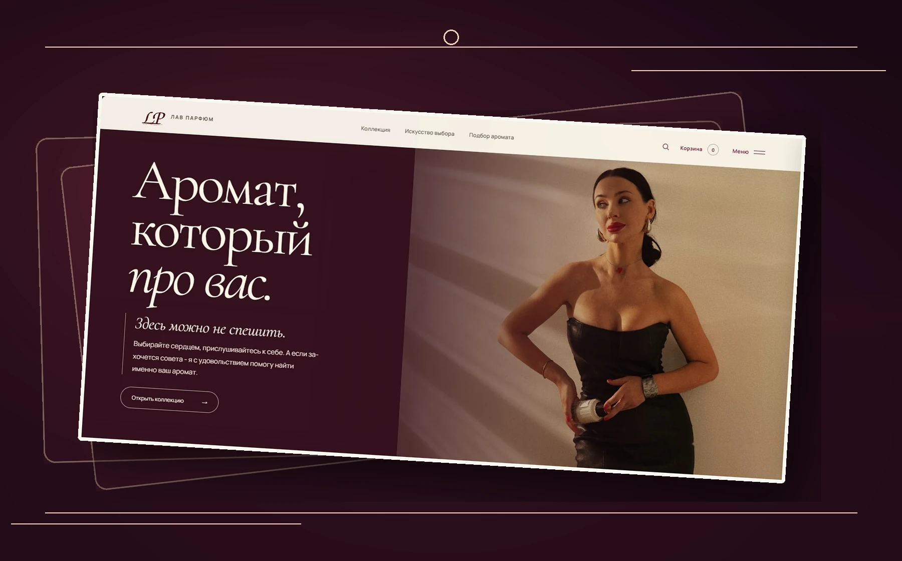
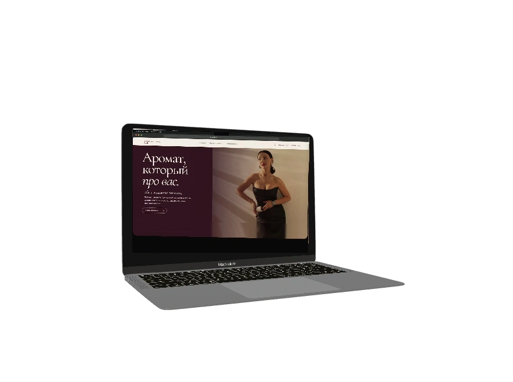
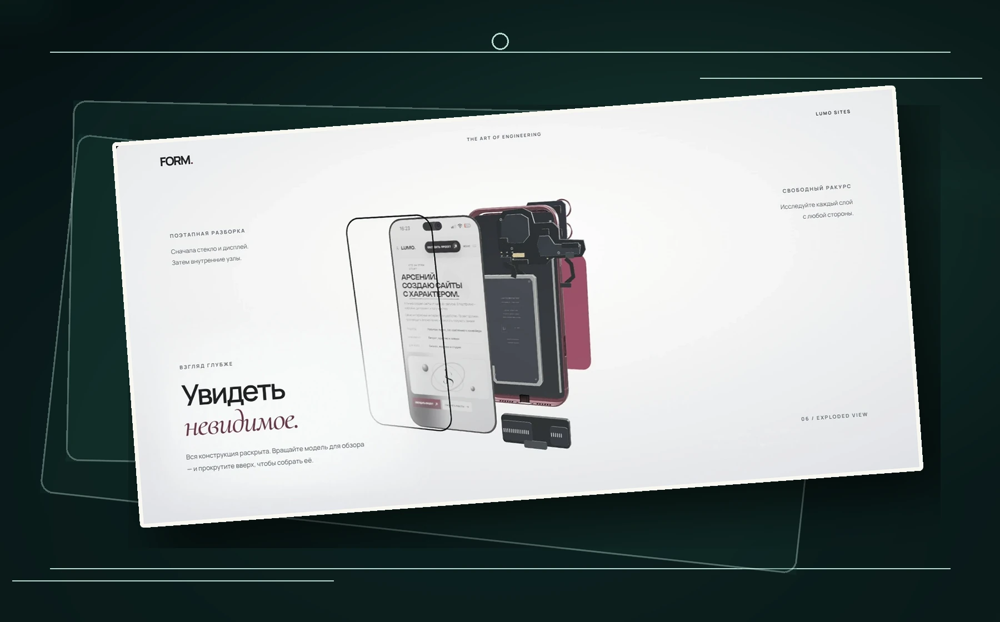
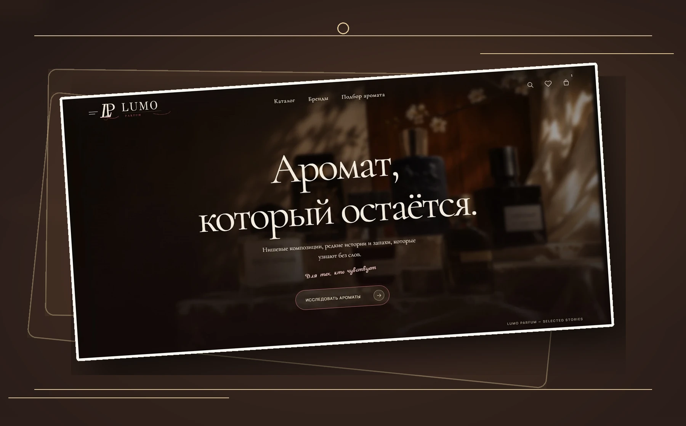
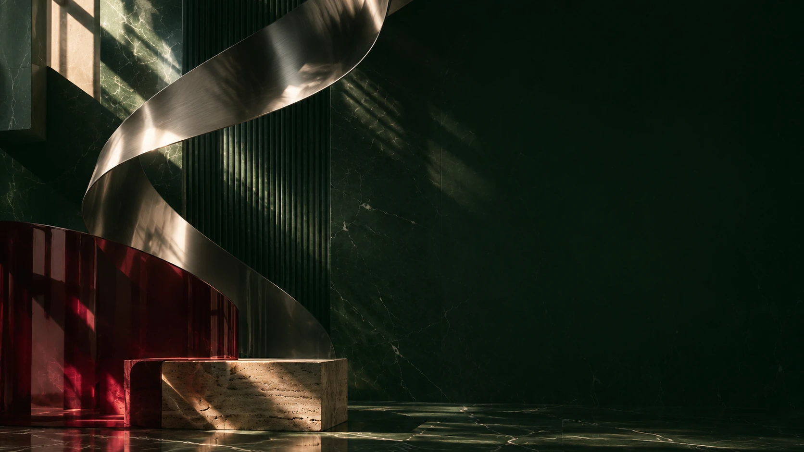

LUMOSITES.
Сайты, которые
хочется открыть.
Не просто сайт.
Продуманный опыт.
От идеи и первого диалога до готового проекта. Дизайн, код и движение работают вместе, без лишних деталей.
Посмотреть процесс
Как рождается готовый сайт.
Этап за этапом – шесть фактурных кирпичей соединяются в цельную конструкцию. Каждый со своим характером и настоящей историей.
Внутри –
настоящая работа.
Показываю реальный сайт в контексте устройства: правильный экран, натуральные материалы и движение, связанное с прокруткой.

Работы.
В движении.
Выбери работу – или пролистывай проекты по горизонтали. На обороте карточек – подробности.
Лав Парфюм
Парфюмерный каталог с выразительной подачей ароматов и удобным выбором. Продумана структура страниц, навигация по коллекции и понятный сценарий обращения.
К проекту
FORM / iPhone 18 Pro
Интерактивная демонстрация устройства: вращение, исследование конструкции и раскрытие внутренних компонентов по мере прокрутки. Движение помогает показать техническую идею.
К проекту
mmrsiq ta2
Портфолио тату-мастера, построенное вокруг работ и личной эстетики. Контрастная типографика, акцентные изображения и быстрый переход к обсуждению записи.
К проекту
Lumo Parfum
Концепция цифрового каталога ароматов, где можно изучать коллекцию, знакомиться с композициями и переходить к подбору. На первом месте — атмосфера и удобство поиска.
К проектуОбъём, который
можно раскрыть.
Раскрывай устройство прокруткой и исследуй его со всех сторон. На внутреннем экране – мой проект FORM / iPhone 18 Pro.

Всё, что нужно.
Ничего лишнего.
Сайты под задачу,
не под шаблон.
От страницы специалиста до каталога и магазина – со структурой, дизайном и рабочими сценариями.
3D и взаимодействие
Только там, где движение действительно усиливает идею.

Один автор.
Цельный результат.
Я работаю напрямую с заказчиками: от идеи и структуры до адаптивного интерфейса, интерактивных деталей и запуска. Без лишних посредников – с вниманием к каждому экрану.
Немного обо мне